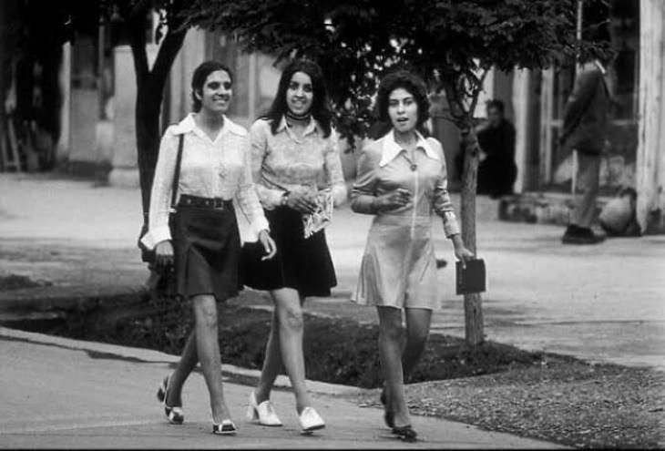
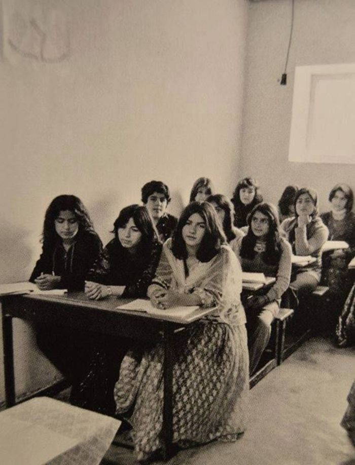
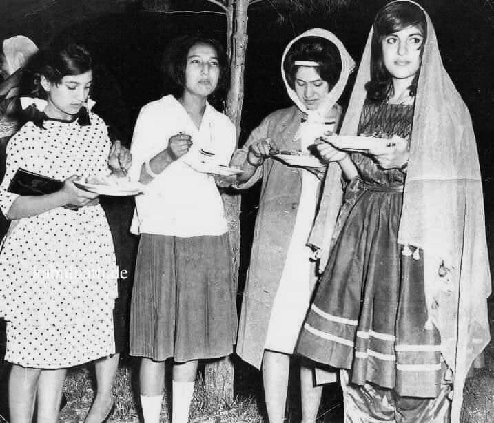
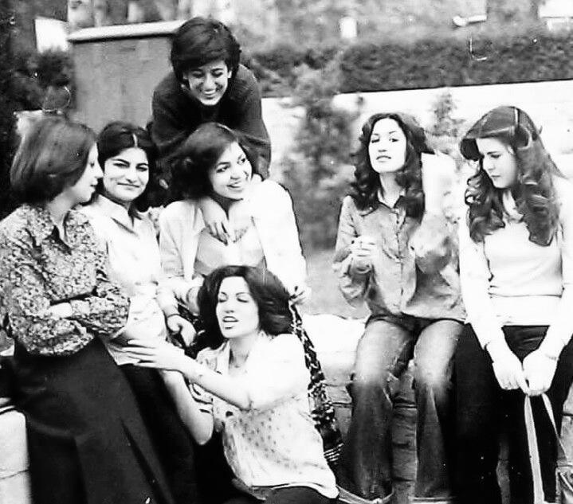
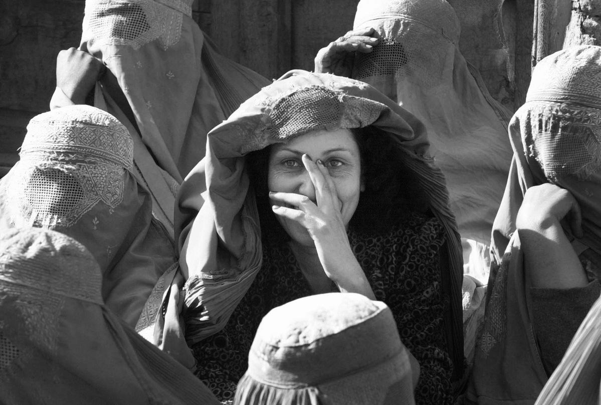
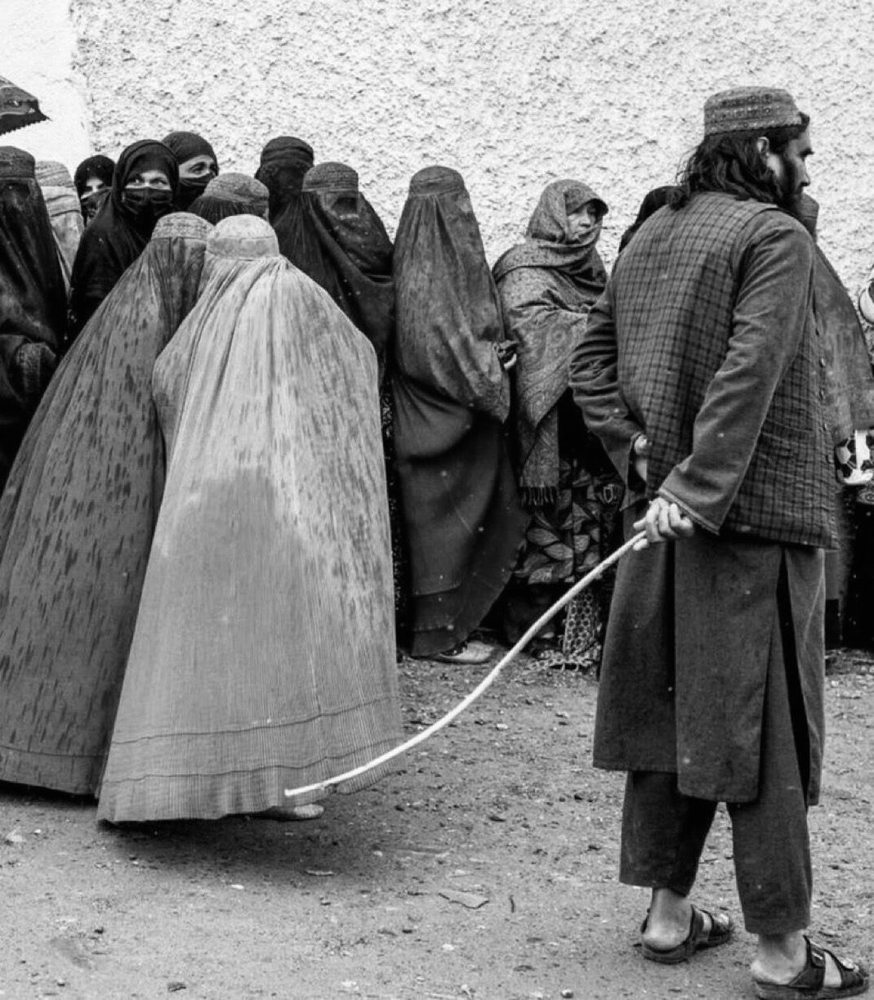

Mujeres afganas en el espacio público, reflejo de una época de transformación social y nuevas oportunidades.
Antes del silencio:
historia y derechos
A lo largo de la historia, las mujeres afganas han vivido entre la conquista de sus derechos y la pérdida de sus libertades. De las aulas universitarias a las restricciones que hoy limitan su participación en la sociedad, su historia refleja décadas de cambios, conflictos y resistencia. Cada transformación política ha dejado huellas en sus vidas, modificando sus oportunidades de estudiar, trabajar y decidir sobre su propio futuro. A pesar de los avances alcanzados en diferentes épocas, muchas de estas conquistas se han visto interrumpidas por la guerra y las imposiciones de poder. Un recorrido por el pasado y el presente de mujeres que, a pesar de los intentos por silenciarlas e invisibilizarlas, continúan resistiendo, defendiendo su identidad y luchando por recuperar sus derechos y ser escuchadas.
El comienzo de una transformación

La historia de las mujeres afganas no siempre estuvo marcada por las restricciones que conocemos actualmente. A comienzos del siglo XX, Afganistán experimentó una serie de reformas que buscaban modernizar el país y transformar el papel de las mujeres en la sociedad.
Durante el reinado de Amanulá Kan, entre 1919 y 1929, se impulsaron cambios relacionados con la educación femenina, el matrimonio y la participación de las mujeres en la vida pública. La reina Soraya Tarzi fue una de las figuras más representativas de este movimiento, al promover la educación y cuestionar algunas prácticas tradicionales que limitaban la autonomía femenina. Sin embargo, las reformas encontraron resistencia y muchas no lograron consolidarse.
Una generación que comenzó a ocupar nuevos espacios
Durante las décadas de 1950, 1960 y 1970, especialmente en ciudades como Kabul, algunas mujeres comenzaron a acceder con mayor frecuencia a las universidades, trabajar como profesoras, médicas y funcionarias, y participar en actividades culturales y políticas.
Uno de los acontecimientos más importantes ocurrió en 1964, cuando una nueva Constitución reconoció el derecho de las mujeres a votar y a presentarse a cargos políticos. En 1965, varias mujeres fueron elegidas para el Parlamento, marcando un momento significativo en la historia política del país.


Sin embargo, estos avances no representaban la realidad de todas las afganas. Mientras algunas mujeres urbanas accedían a oportunidades educativas y profesionales, muchas habitantes de zonas rurales continuaban enfrentando barreras económicas, sociales y culturales.
Los primeros retrocesos
A partir de 1978, Afganistán atravesó golpes de Estado, enfrentamientos internos y la intervención militar soviética de 1979. Aunque el gobierno de orientación comunista promovió reformas educativas y sociales, la violencia y la resistencia a esas políticas generaron profundas divisiones.
Durante los años siguientes, la guerra afectó gravemente la vida de millones de personas. Para muchas mujeres, estudiar, trabajar o desplazarse se volvió cada vez más difícil debido a la inseguridad, el desplazamiento y la destrucción de comunidades.
La historia de sus derechos comenzó a quedar estrechamente ligada a los conflictos políticos y militares del país. La retirada de las tropas soviéticas en 1989 no significó el fin de la violencia.
Los enfrentamientos continuaron y miles de familias se vieron obligadas a abandonar sus hogares en busca de seguridad.
La situación empeoró en 1992, cuando una nueva guerra civil profundizó la inestabilidad del país. Muchas escuelas cerraron, los servicios básicos se deterioraron y las oportunidades para las mujeres comenzaron a reducirse.

Mientras algunas mujeres de las ciudades intentaban conservar sus empleos y continuar sus estudios, otras tuvieron que abandonar sus aspiraciones para proteger a sus familias. La incertidumbre se convirtió en parte de su vida cotidiana, anticipando una etapa de restricciones todavía mayores.
Una generación marcada por la guerra
Los conflictos que atravesaron Afganistán no solo transformaron su estructura política, sino también la manera en que las mujeres vivían, estudiaban y se relacionaban con su entorno. Aquellas que habían crecido durante décadas de cambios sociales comenzaron a enfrentarse a una realidad cada vez más incierta.
Para muchas familias, la educación de las niñas se volvió difícil de mantener. La inseguridad, la destrucción de instituciones y las dificultades económicas provocaron que numerosas jóvenes abandonaran sus estudios.
El desplazamiento forzado también cambió profundamente sus vidas. Miles de mujeres tuvieron que adaptarse a nuevas comunidades, lejos de sus hogares y de las oportunidades que habían conocido. Algunas asumieron mayores responsabilidades familiares, mientras otras intentaron conservar sus empleos.
A pesar de estas circunstancias, las mujeres siguieron desempeñando un papel fundamental como madres, maestras, trabajadoras y profesionales de la salud, contribuyendo a sostener sus comunidades en medio de la violencia.
Sin embargo, los avances alcanzados durante el siglo XX se volvieron cada vez más frágiles. Al comenzar la década de 1990, Afganistán atravesaba una profunda división política y social que amenazaba el futuro de los derechos femeninos.
